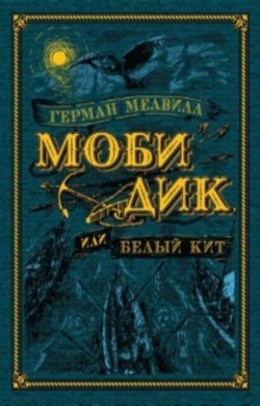

«Моби Дик, или Белый Кит» — один из самых великих американских романов и аллегория борьбы человека с мировым злом. Автор называл книгу романтическим приключением, основанном на его двухлетнем опыте гарпунера и на одной из тех диких легенд, что ходят между китобоями южных морей. В основе сюжета лежит реальная история. Эрнест Хемингуэй и Уильям Фолкнер провозгласили роман литературной иконой, а в США до сих пор царит настоящий культ Мелвилла.
Узнать подробнее